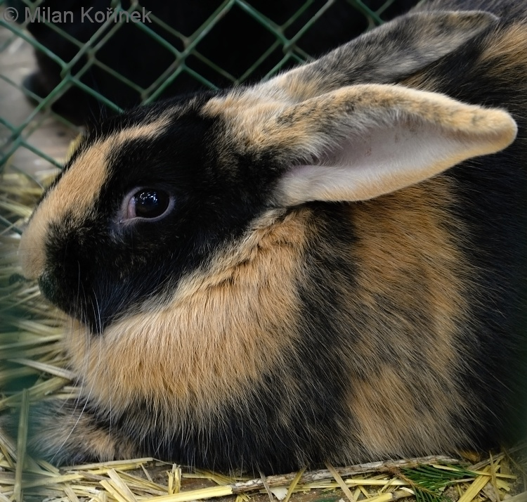

Králík japonský (Pentalagus furnessi, japonsky アマミノクロウサギ 奄美野黒兔, doslovně „černý divoký amamský králík“), také známý jako králík amamský, amaninský či stromový, je tmavosrstý králík. Vyskytuje pouze na Amami Óšima a Tokunošima, dvou malých ostrovech mezi jižním Kjúšú a Okinawou v prefektuře Kagošima v Japonsku. Králík amamský je nazýván živoucí fosílií. Dříve obýval asijskou pevninu, na které vyhynul. Zachoval se pouze na těchto dvou ostrovech, kde v současnosti žije.
Králík amamský má krátké nohy, mohutné tělo a velké zakřivené drápy, které používá pro hrabání a lezení. Ve srovnání s jinými zajíci nebo králíky jsou uši králíka amamského výrazně menší. Jeho srst je hustá a jakoby vlněná, nahoře hnědá a na bocích červeno-hnědá. Má těžké, dlouhé a silné drápy, na předních tlapách jsou téměř rovné, na zadních tlapách zakřivené. Oči jsou malé ve srovnání s běžnějšími druhy králíků a zajíců. Průměrná hmotnost je 2,5–2,8 kg
